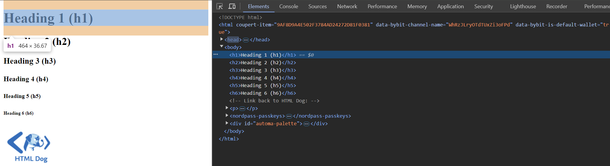
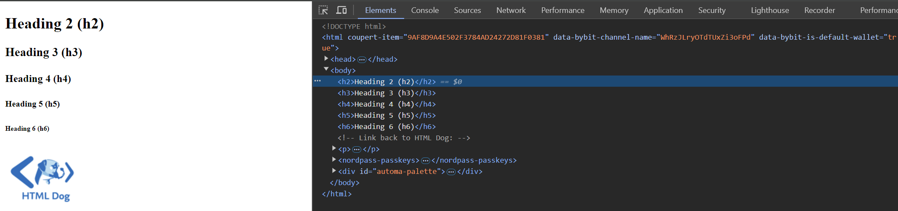
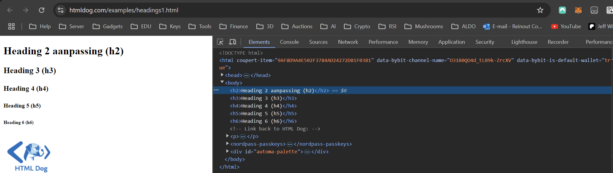

Opdracht 2 - Handmatig de DOM-tree bewerken
Demonstratie van DOM-tree bewerking met Chrome Developer Tools
In deze opdracht ga je handmatig de DOM-tree bewerken met behulp van de Chrome Developer Tools:
- Open de 'voorbeeld headings.HTML' pagina in Chrome die we in het vorige labo hebben gemaakt.
- Beweeg je muis over de elementen in de DOM-tree en kijk hoe onderdelen op de webpagina worden gehighlight.
- Rechtsklik op een element in de DOM-tree en kies "Delete". Merk op dat het element direct uit de webpagina verdwijnt.
- 
- Dubbelklik op de tekst (content) tussen de begin- en eindtags van een heading-element en verander de tekst. De wijziging wordt direct zichtbaar op de webpagina.
- 
Deze wijzigingen gebeuren allemaal lokaal in de browser. Er is geen interactie met de server nodig.
Soorten HTML-documenten
Vanuit het perspectief van de DOM-tree kunnen we twee soorten HTML-documenten onderscheiden:
- Statische HTML-documenten: De inhoud van de pagina verandert niet nadat deze is geladen in de browser. De broncode (source) die de browser ontvangt, komt altijd overeen met de DOM-tree die de browser gebruikt om de pagina weer te geven.
- Dynamische HTML-documenten: De inhoud van de pagina kan veranderen nadat deze is geladen door gebruik van JavaScript dat de DOM-tree bewerkt. In dit geval komt de originele page source vaak niet overeen met de dynamisch aangepaste DOM-tree.
Dit dynamische gedrag is een van de kenmerken van "Web 2.0", waarbij websites zich automatisch aanpassen zonder dat de hele pagina opnieuw hoeft te worden geladen.